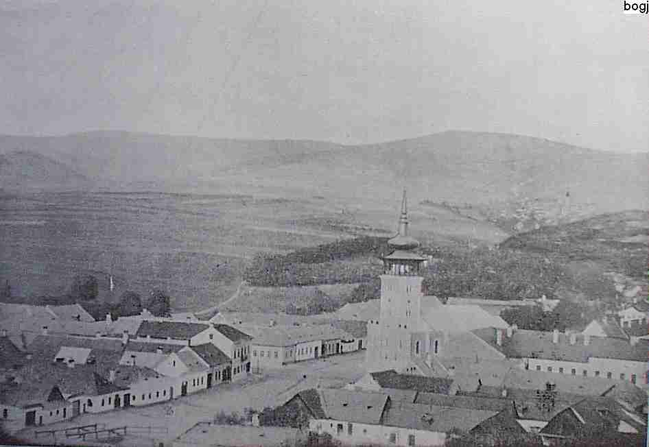

Metzenseifen Roots
This portion of my family tree originates in the town of Metzenseifen, now called Medzev in Slovakia. In actuality, Metzenseifen was two towns: Unter-Metzenseifen and Ober-Metzenseifen. At the time my ancestors came over, the towns were part of Austria-Hungary, although the majority of the inhabitants were Germans.
Two of my Great Grandparents, Paulina Stark and Anton Stark (who happened to be fourth cousins), were born in Ober-Metzenseifen, Agnes Kundt was born in Unter-Metzenseifen, and Louis Weet (born Ludovicus Vitkovszky) was born in the nearby town of Mníšek nad Hnilcom. All four came over in the mid to late 1880's and settled in Pittsburgh, PA. The South Side and Beltzhoover areas of Pittsburgh were home to a large number of Metzenseifen immigrants, drawn to Pittsburgh by the abundance of steel mills and mines.
- Ludovicus Vitkovszky and Paulina Stark
- Anton Stark and Agnes Kundt
- Michael Orient and Julianna Eiben
- Albert Eiben and Anna Friedl
- Lajos Gaspar and Terez Baffen
- Andreas Quallich and Anna Maria Schobert
- Theodore Kundtz and Maria Ballasch

The town of Unter-Metzenseifen